26/11/2026 · tes derniers points, dans l'ordre de tes messages
La colonne du 1er et les espaces dans les murs, le coin à côté de l'escalier au rez-de-chaussée,
la dernière marche au 1er, puis la carte : la légende, le bouton 3D, le 1er étage sans écran de chargement.
1 · La colonne du 1er et les pavés de verre
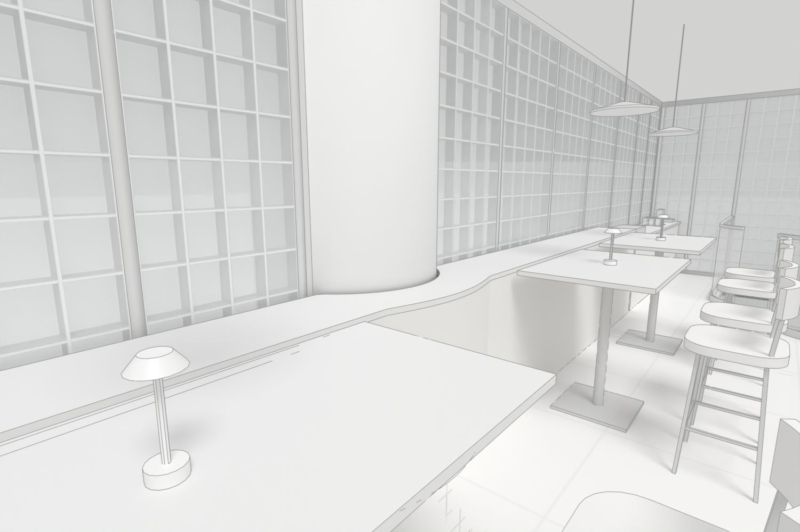
La colonne de la façade droite, depuis le 1er
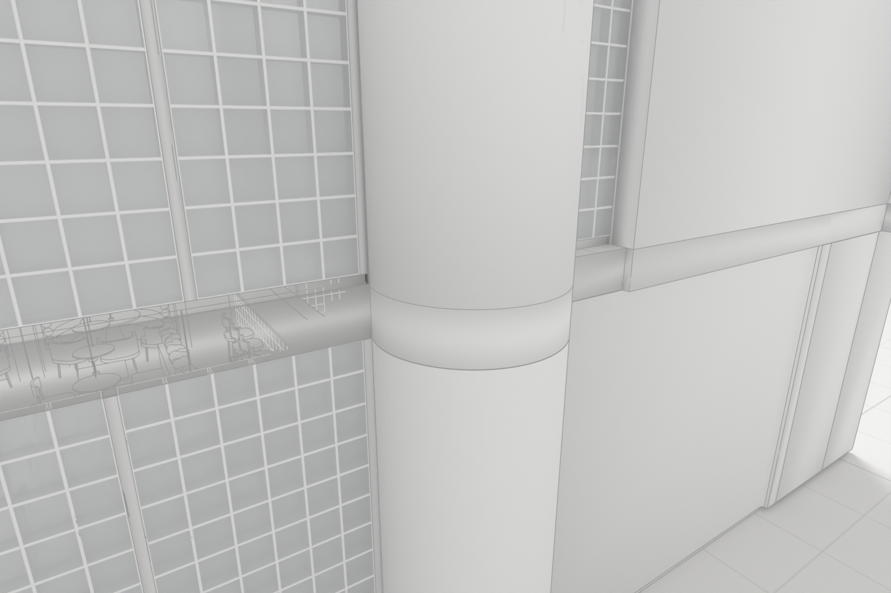
La même, de la rue : le même diamètre aux deux étages
Ce qui n'allait pas. Au 1er, les deux colonnes de la façade droite étaient dessinées plus fines que celles du bas : les pavés de verre s'arrêtaient sur le dessin du plan et laissaient un vide contre la colonne. Ailleurs, des fentes de 1 à 3 cm restaient là où deux murs du plan se rejoignaient, et l'angle nord-est du bas était ouvert.
Ce que j'ai fait. Les colonnes du 1er ont la position et le diamètre de celles du rez-de-chaussée. Les pavés de verre vont jusqu'à elles, et une joue en acier comble l'arrondi. Les joints de mortier sont entre les pavés, toutes les fentes sont comblées aux deux étages et l'angle nord-est est fermé. Une coupe du modèle à 1,50 m le vérifie : plus aucun passage entre l'intérieur et l'extérieur. Les demi-tambours ont avancé de 10 cm pour laisser la colonne entière.
2 · Le coin à côté de l'escalier, au rez-de-chaussée
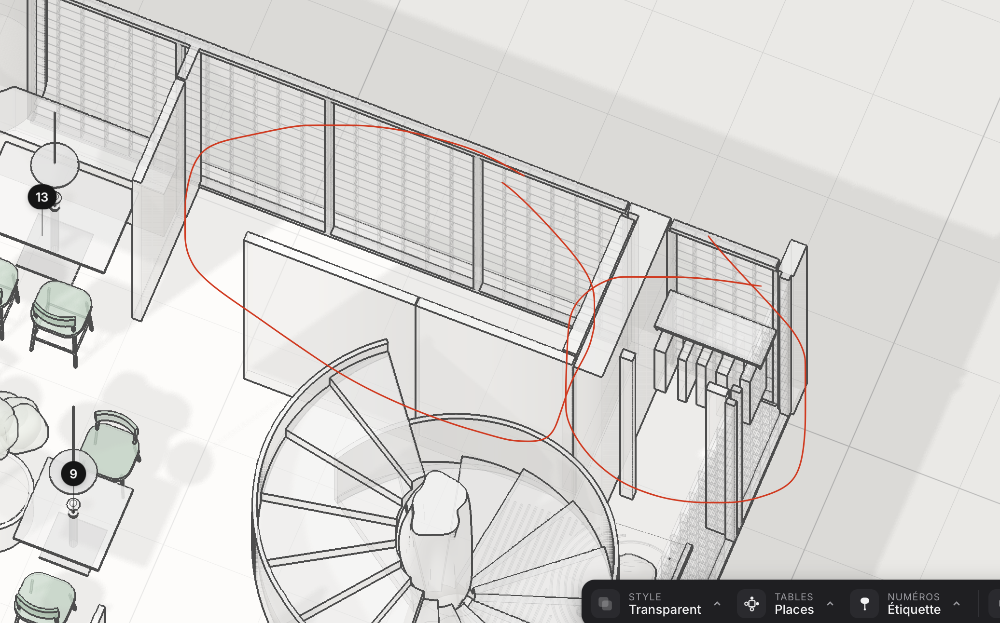
Avant (ta capture)
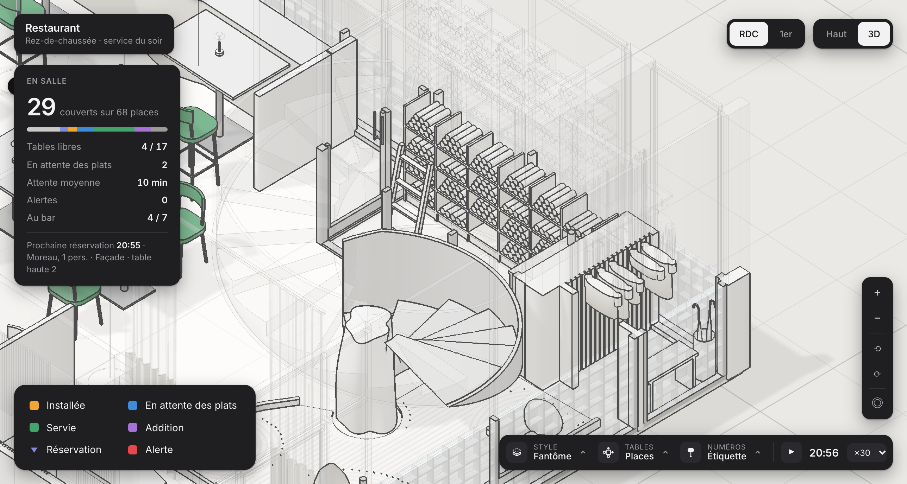
Après, sur la carte (style fantôme)
Ce qui n'allait pas. Une cloison fine de 3 m longeait l'escalier ; derrière elle, une bande de 1,40 m contre les pavés de verre restait vide et sans usage. À côté, le vestiaire n'était qu'une tablette et des manteaux en forme de planches.
Ce que j'ai fait.La bande devient une cave à vin vitrée. La cloison est remplacée par un vitrage en acier, comme la devanture (poteaux fins, imposte à 2,40 m). Au nord, il y a une porte vitrée à longue poignée. À l'intérieur, un casier en chêne va du sol à 2,77 m contre les pavés de verre : les bouteilles sont couchées, le culot vers l'allée, et une rangée est debout à hauteur des yeux. Une échelle de bibliothèque roule sur un rail en acier, et au fond, une console de dégustation porte une carafe, deux verres et une bouteille. Le vestiaire est refait : un lambris de lattes de chêne, une tablette à chapeaux, une tringle en acier, des manteaux sur cintres (avec leurs manches), un banc en chêne le long des pavés de verre et un porte-parapluies dans l'angle. Sa baie est encadrée de chêne, sous un linteau à 2,20 m.
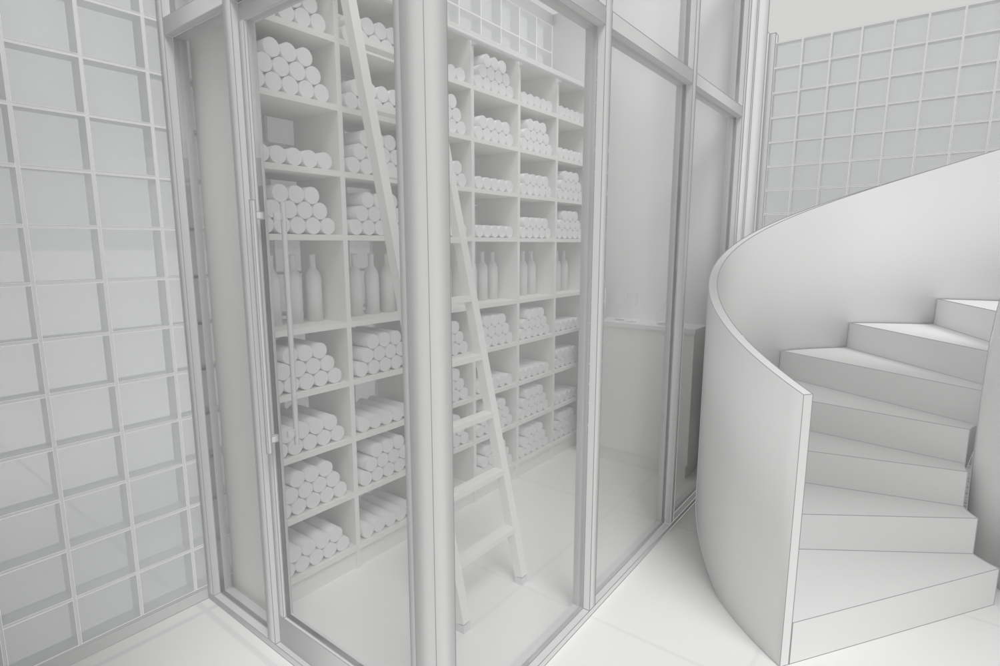
La cave, depuis la salle : le vitrage, la porte, l'escalier
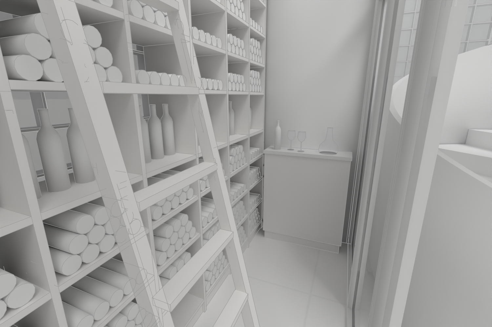
Dans la cave : le casier, l'échelle, la console
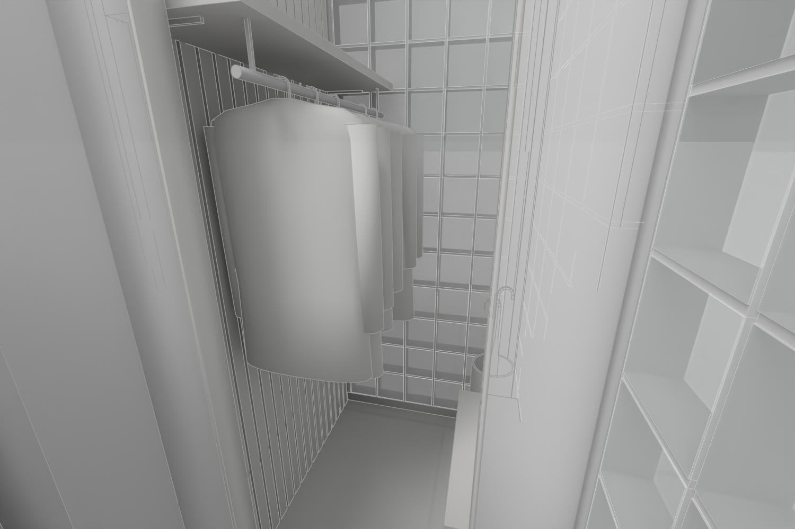
Le vestiaire, depuis l'entrée
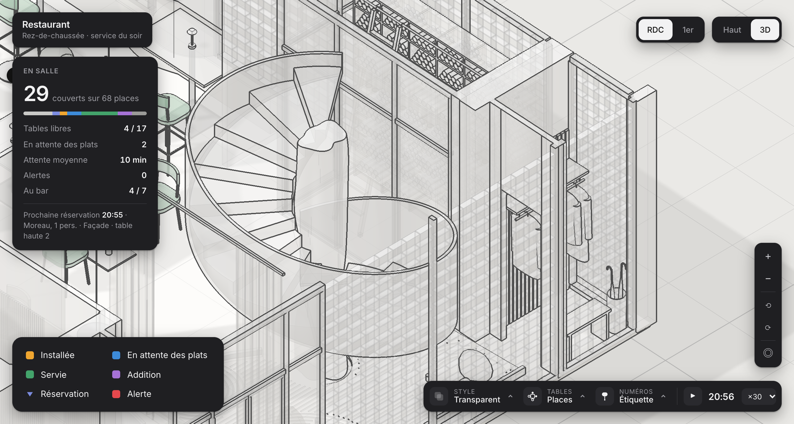
Sur la carte, en style transparent
3 · L'escalier du 1er
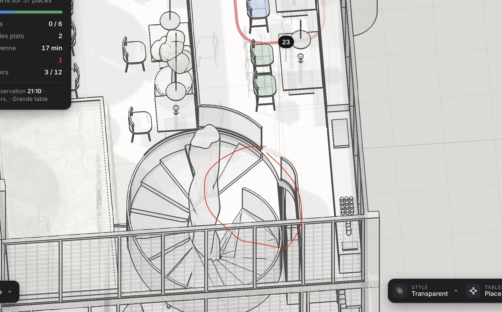
Avant (ta capture)
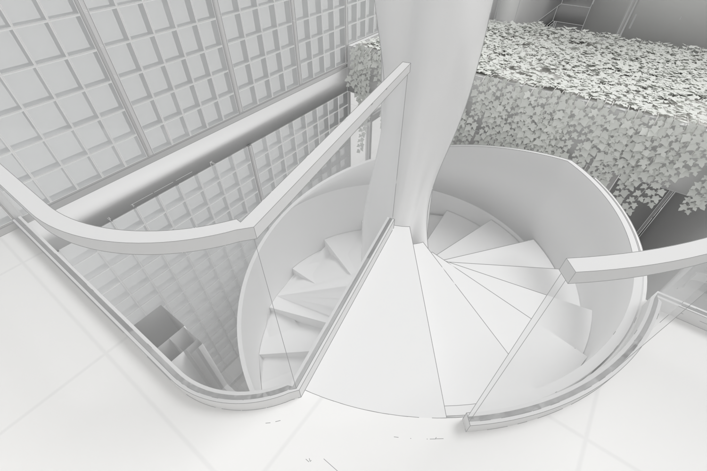
Après : le palier, depuis l'arrivée
Ce qui n'allait pas. La dernière marche s'arrêtait 18 cm sous le plancher, au bord de la trémie : l'escalier donnait dans le vide.
Ce que j'ai fait. Un palier, la 19e marche, est au niveau du plancher, dans l'épaisseur de la dalle. Il va de la dernière contremarche jusqu'au garde-corps du jardin. Ce garde-corps part maintenant du noyau et ferme le côté du palier sur le vide. On sort de l'escalier vers la façade droite, entre les deux garde-corps vitrés.
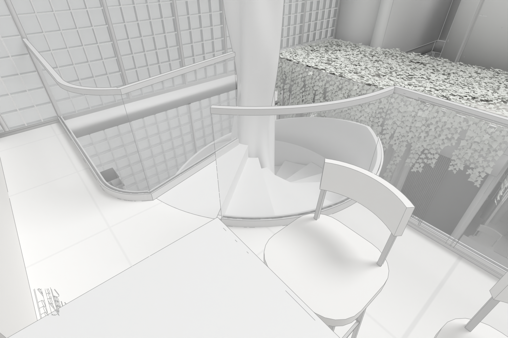
Le palier, depuis le coin du 1er
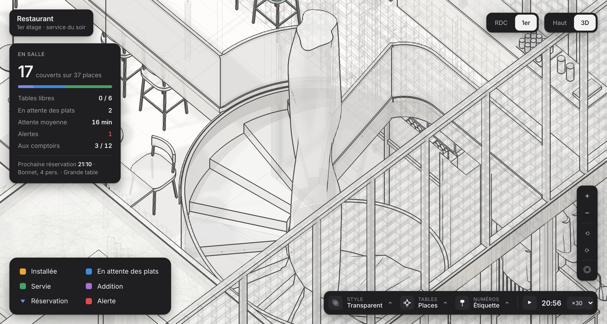
Sur la carte
4 · La légende
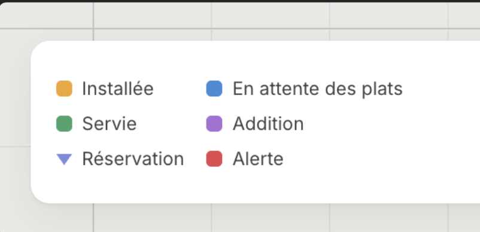
Ton modèle
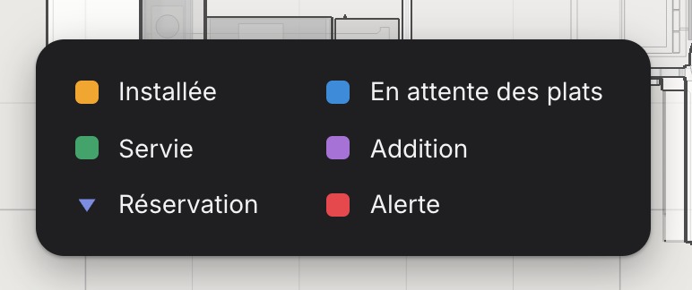
La légende, en sombre
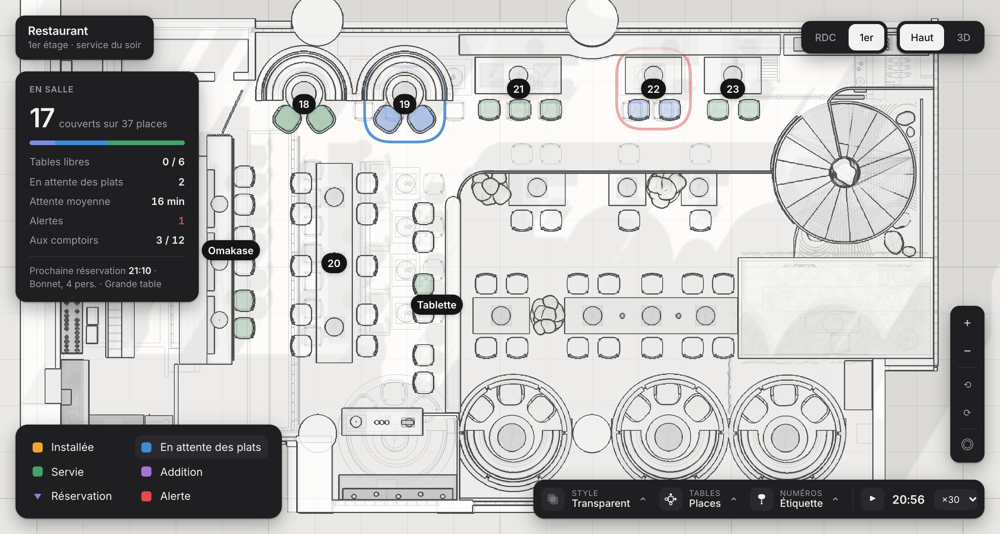
Survoler un état repère ses tables
Le bouton « Légende » est remplacé par une carte sombre, toujours visible
en bas à gauche : les six états en deux colonnes, comme sur ton modèle (Installée, En attente des plats, Servie,
Addition, Réservation avec son triangle, Alerte). Survoler un état entoure ses tables sur la carte ; un clic les garde
entourées.
5 · Le bouton 3D et le 1er étage
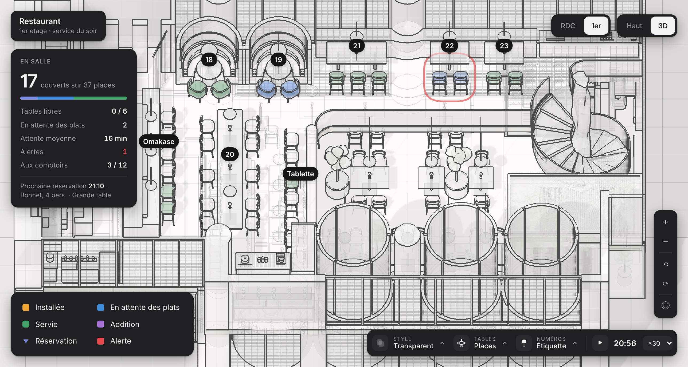
La vue du haut inclinée d'un geste : « 3D » s'allume seul
Le bouton 3D. Dès qu'un geste incline la vue du haut, le bouton « 3D » se sélectionne, comme si tu avais
cliqué dessus. Ramenée à plat, la vue repasse sur « Haut ». Un pincement pour zoomer ne penche plus la vue : il faut
l'incliner de plus de 4° pour passer en 3D.
Le 1er sans écran de chargement. Le rez-de-chaussée s'affiche d'abord, puis le 1er se charge en
arrière-plan, déjà habillé pour le style en cours. Le bouton « 1er » l'affiche aussitôt, même la première fois : 32 ms
au test, sans écran noir. Si on clique avant la fin du chargement, le bouton pulse doucement le temps qu'il arrive.
Questions
La cave à vin à la place de la bande vide, et le vestiaire refait : ça te va ?
Le palier de l'escalier au 1er te va-t-il ?
La légende, le bouton 3D et le passage au 1er : est-ce bien ce que tu voulais ?
Ensuite : je refais les plans des deux étages d'après le modèle, et les captures de la carte.
Rappel : le lien et la licence du modèle « ivy-for-walls », pour le créditer.